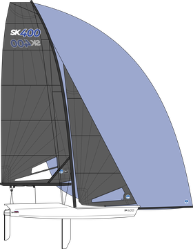
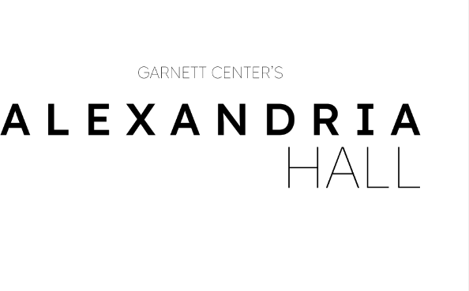

After a Seven-Hour Hearing, Rent Rules Head to Committee in January
Published Sunday, November 22, 2026
The council heard from 224 people before adjourning at 1:20 a.m. Tuesday. A staff report is due before the housing committee takes up the two proposals, and no vote is expected before February.
By the Times City Hall Desk
224
people spoke at Monday’s hearing
7 hrs
from 6 p.m. to 1:20 a.m. Tuesday
~400
written comments sent to the clerk
Feb.
earliest a vote is expected
The two proposals go to the housing committee in January, after a staff report on other cities.
The longest public hearing at City Hall in at least five years is over. The work on what comes next has barely started.
The City Council opened its hearing on rent rules at 6 p.m. Monday and closed it at 1:20 a.m. Tuesday. The city clerk counted 224 speakers. About 400 more people sent written comments before the noon deadline.
Most of the speakers were renters. Many said their rent had gone up 10 percent or more in a single year. Several said they had already moved farther out along the D Line to find something they could afford.
Landlords and builders pushed back on the proposed cap on yearly increases for apartments built before 2010. They said it would make older buildings harder to keep up and slow new construction near SBTrain stations.
The second proposal, 90 days of written notice before any increase over 5 percent, drew less opposition. A number of small landlords told the council they could live with longer notice but not with a limit on how much rent can rise.
The council president said both proposals will go to the housing committee in January. City staff will first write a report on what other cities have done and how a cap has worked there. The council does not expect to vote before February.
The full video of the hearing is on the city website. Written comments can still be sent to the city clerk, and they will be added to the record for the committee.
Business & the Port
Holiday Freight Keeps Samolette Working Seven Days a Week
Published Sunday, November 15, 2026
The Sunday gates at the Samolette terminal stay open through December 20, but close on Thanksgiving Day. Black Friday stock is arriving now. More on C1.
Election Results Become Official Tuesday
The State Board of Elections meets November 24 to certify the results of the November 3 general election.
Advertisement
Frostbite season. Every Sunday.

Arts
Nutcracker Weekend Shows Nearly Sold Out in Three Days
Published Friday, November 20, 2026
Weekday evenings December 14 to 17 still have good seats. The fall mixed bill closes today at 2 p.m. Story on E1.
First Bus Plan Open House Draws About 140 Riders
Published Thursday, November 19, 2026
Two open houses on the 2027 bus plan are left, December 2 at Farsgod Branch and December 5 at Ulvaeus Branch. The survey closes December 11. B1.
On the Water
Frostbite racing goes on today after the hard freeze. First warning signal is 11 a.m. off the breakwater. F1.
Weather
37°
Sunny and cold, with a north wind of 10 to 15 mph. Clear tonight, low 22. Monday, sunny, high 39. Highs back in the 40s by Tuesday.
SBTransit Today
SBTrain A–ESunday schedule
SBMetroFree to warming centers
SBX Terminal ShuttleEvery 5 min
ALBExpress X4Every 20 min
SBFerry F1 to VillasOn time
B
Metro & Transit
Section B · Pages 1–8
Metro & Transit
Getting Out of Town and Back: Your Guide to Thanksgiving Week
Published Sunday, November 22, 2026
By the Times Transit Desk
Thanksgiving week is here, and almost every way in and out of Silverbrooks will be busier than usual. The busiest days should be Wednesday, November 25, and Sunday, November 29.
At SBX, the airport authority expects about 2.6 million passengers over the 12-day holiday period, a record. All four TSA checkpoints now open at 3:30 a.m. and will keep that schedule through December 1. The airport suggests arriving two and a half hours before a domestic flight.
The D Line is the easiest way to the airport. Trains now stop under the terminal, and weekday ridership has been up about 21 percent since that station opened. The airport garages often fill by mid-morning on busy days. The Economy Lot has the most room.
SBMetro and SBTrain will run a Sunday schedule on Thanksgiving Day and a Saturday schedule on Friday. Extra trains will serve Elliot Square on Friday for the holiday market opening and the 6 p.m. tree lighting.
ALBExpress is adding trains between cities on Wednesday and Sunday. Drivers get a break from road work. The state will lift lane closures on state highways starting Tuesday and keep them open until 5 a.m. on Monday, November 30.
Around town, trash and recycling pickup moves back one day after Thanksgiving. City Hall and state offices are closed Thursday and Friday.
Wednesday and Sunday will be the worst days. The D Line is the easiest way to SBX.
Thanksgiving week schedules
Day
SBMetro & SBTrain
Also
Wed, Nov 25
Weekday schedule
Extra ALBExpress trains
Thu, Nov 26
Sunday schedule
City and state offices closed
Fri, Nov 27
Saturday schedule
Extra trains to Elliot Square
Sun, Nov 29
Sunday schedule
Extra ALBExpress trains
Mon, Nov 30
Weekday schedule
Highway work resumes 5 a.m.
Elliot Square Fencing Comes Down Thursday
Until then, riders walking from Elliot Square station should use the south walkway past Garnett Center.
Trash Pickup Moves Back a Day
Pickup after Thanksgiving shifts one day later all week. Thursday routes go out Friday, and Friday routes go out Saturday.
K–8 Half Days Monday to Wednesday
Elementary and middle schools let out early for conferences. Every school is closed Thursday and Friday.
C
Business & the Port
Section C · Pages 1–6
Business & the Port
Last Holiday Ships Reach Samolette as Stores Stock Up for Black Friday
Published Sunday, November 22, 2026
By the Times Business Desk
The last big wave of holiday cargo is coming through the Port of Silverbrooks this week, just in time for Black Friday.
Container ships carrying toys, electronics and clothing are still unloading at the Samolette terminal, and trucks are moving the boxes to warehouses and stores across the region. Port officials said most of what arrives after this week will be for after-Christmas sales and spring stock.
The Sunday gate shift the port added this month will stay open through December 20. It has kept trucks from lining up on Monday mornings after weekend arrivals, port officials said. The gates will be closed on Thanksgiving Day and open again Friday.
October set a record, with 41,067 containers moved at Samolette. Port officials said November is on pace to come close, though they will not have a final count until early December.
Work on the new cold-storage terminal at Samolette, which broke ground this month, is not affecting truck traffic. That building should open in late 2028 with about 150 permanent jobs.
Sunday gates at Samolette through December 20, closed Thanksgiving Day.
Kwáani's Second Daily Nonstop Starts in December
The evening departure from SBX begins next month. The airline says holiday seats on both flights are nearly gone.
MC42 Moves From the Mold to the Deck
MC Performance Yachts is fitting out the first hull of its 42-foot racer. The boat is still due to its buyer in time for the Atlan Cup.
Nysel's Night Shift Is Hired
Nysel Boatworks closed applications for riggers Friday. The new haul-out night shift starts after Thanksgiving.
D
Sports
Section D · Pages 1–8
Hockey
Voyageurs Bring a Four-Game Win Streak Into a Short Holiday Week
Published Sunday, November 22, 2026
By the Times Sports Desk
The Voyageurs have not lost since November 11, and they came home Saturday looking like the best team in their division.
Silverbrooks beat its division rival 3-2 at AmEx Garden in its first home game in two weeks. The Voyageurs led 2-0 after the first period. The winner came on a power play midway through the third. The visitors scored with their goalie pulled in the last minute, but the Voyageurs held on in front of a sold-out building.
That made it four straight wins. The road trip that ended Wednesday finished 3-1, with a 4-1 win last Sunday and a 2-0 shutout on Wednesday, the team’s first shutout of the season.
The penalty kill has carried a lot of it. It went 11 for 11 on the road trip before allowing a power-play goal Saturday, the first since the trip began.
The Voyageurs host again Tuesday at 7 p.m., the night before the busiest travel day of the year. Elliot Square station on the SBTrain is the closest stop. Use the south walkway past Garnett Center, since the north half of the square stays fenced off until Thursday night.
Four straight wins, and still on top of the division.
Penalty Kill by the Numbers
Eleven for 11 on the road trip, then one power-play goal allowed Saturday. The goalie stopped 31 shots in Wednesday's shutout.
Foxford Rink Makes Its First Ice
Crews are building the ice sheet at the new UA Foxford rink. The building is still on track to open in January.
Getting to Tuesday's Game
Doors open at 5:30 p.m. Extra SBTrain service runs after the game from Elliot Square, where riders reported short waits Saturday.
E
Arts
Section E · Pages 1–6
Dance
Silverbrooks Ballet Closes Its Fall Mixed Bill Today and Turns to The Nutcracker
Published Sunday, November 22, 2026
By the Times Arts Desk

The fall mixed bill closes today at 2 p.m. The Nutcracker opens December 11 at Alexandria Hall.
Silverbrooks Ballet’s fall mixed bill of three new works ends its run today with a 2 p.m. matinee at Garnett Center’s Alexandria Hall. A small number of seats were still available Saturday.
Then the company turns to the show that pays for much of its year. The Nutcracker opens December 11 for 14 performances through December 27, and stage rehearsals with the more than 60 young dancers from schools across Silverbrooks begin after Thanksgiving.
Tickets went on sale Tuesday. By Thursday night most Saturday and Sunday shows had fewer than 50 seats left, the company said. The two weekday morning shows during school break, with $15 tickets for children under 12, sold fastest.
The company said it is looking at a third morning show and expects to decide this week. Weekday evening shows from December 14 to 17 still have good seats, starting at $32.
Elliot Square station on the SBTrain is a short walk from Garnett Center. The holiday market opens in the square on Friday, so the company suggests leaving extra time on December weekends.
Holiday Market Opens Friday in Elliot Square
The market and rink open at 11 a.m. on November 27, with the tree lighting at 6 p.m. Skating is free for residents on opening day.
Food for Fines Is Back
Bring canned food to any library branch through December 19 and take $1 off late fees for each item.
Station Murals Still Open to Artists
The city is taking proposals for murals at Elliot Square, Ferry Terminal and SBX stations until January 15.
F
On the Water
Section F · Pages 1–4
Racing
Frostbite Day Three Sails Into the Season’s First Hard Freeze
Published Sunday, November 22, 2026
By the Times Waterfront Desk
The winter frostbite series goes on today, even after the coldest night of the fall. First warning signal off the harbor breakwater is 11 a.m.
The forecast calls for a clear sky and a north breeze of 10 to 14 knots, with an air temperature in the 30s at the start. Water in the harbor is near 50 degrees and expected to drop below that by early December. Drysuits or wetsuits are required for every sailor, and the race committee asked crews to check for ice on docks and ramps before launching.
Last Sunday, showers and a fading south breeze held racing to three races. Thirty-eight boats came out, three fewer than opening day. The Larssen Bauers had 16 boats, ILCAs 13 and Club 420s 9. A fourth race was started and abandoned when the wind died around 2 p.m.
Starts will again be held for SBFerry crossings. The series runs every Sunday through March, and the breakwater is a free place to watch from shore.
There is no break for the holiday. Racing is on next Sunday, November 29, as scheduled.
Fleet
Day 1
Day 2
Larssen Bauer
17
16
ILCA
14
13
Club 420
10
9
All boats
41
38
Winter Keelboat Series Sign-Ups Open
Members can sign up for winter racing in club J/22s and J/24s. The series starts January 16 on Hanson Bay.
Circuit Fees Hold for 2027
AYRC season and single-regatta entry fees will not go up next year. Registration opens March 1.
Watch From the Breakwater
Frostbite racing is free to watch from shore every Sunday through March. Dress for wind.


 SBMetro
SBMetro